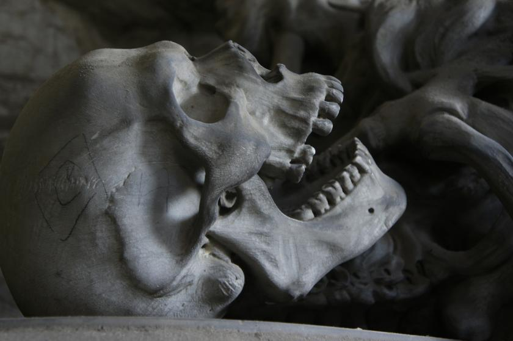

Just one more turn...
You wander through the tunnels chasing any glimmer of hope.
You've lived a good, pious life. The light wouldn't abandon you here in the depths.
Dozens of times you head toward a light or a sound only to reveal that they were tricks of your desparate mind.
Perhaps you should backtrack to where you began and try a different approach.
Which tunnel did you take to get here again?
How long have you been down here?
Wish there was some water.
Getting tired.
must rest
so dark